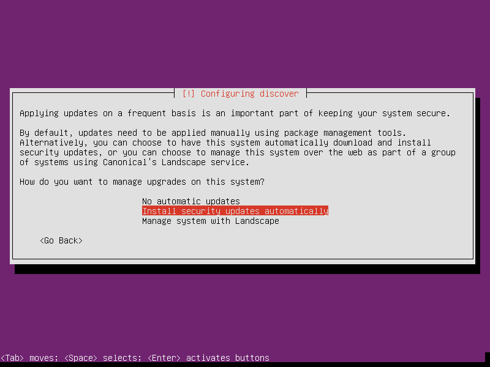
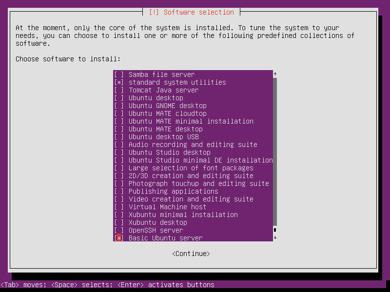

Home Server Project #0.1 .: Netbooks ... remember those small, (a few) Linux-powered laptops from several years ago? I dusted off my old Asus 900HA netbook and put it to work as a home server. Good times!
Running your own home server is a fun learning experience and offers several advantages.
Second-hand laptops - retired in favour of more current and powerful machines - can still deliver plenty of oomph for running a personal server. Frugal with power and come equipped with their own built-in UPS (battery)!
Install a stable, well-tested Linux distribution and provide services such as network printing and storage (NAS), perform backups, host web services and much more. Start with a minimal base configuration of Ubuntu and gain access to tens of thousands of packages ready to install.
Privacy may be important to you. Hosting your own server running your own services gives more control over your data.
Let's go!
Hardware: Asus 900HA netbook with 10" display, 1GB RAM, a 500GB hard drive (very easy replacement of original drive - just unscrew the netbook's bottom panel), built-in ethernet/wifi, webcam, and a host of ports (3xUSB2, VGA, sound, SD card slot). Neat and compact device!
0. Install Ubuntu
My visual screenshot tour of installing Ubuntu 16.04 - a Long Term Support (LTS) release. Ubuntu's minimal install image (32bit for the netbook) makes it easy to create a console-only base configuration that can be later customized for various tasks.
I make a few modifications to my usual desktop install routine that are more appropriate for configuring a home server ...
Storage: I divide the netbook's internal storage into 3 partitions ...
- sda1 is a 24GB root partition
- sda2 is a 2GB LUKS encrypted swap partition using a random key
- sda3 uses the remaining space as a unmounted encrypted partition (setup post-install)
I don't want an unattended server halting in the boot process waiting for a passphrase for sda3_crypt or any necessary mountpoints to reside on that partition. After a successful first boot I configure the encrypted partition to be mounted manually to /media.
Updates: I like to select Install security updates automatically for a device running unattended with long uptimes ...
Tasks: Select [*] standard system utilities and the few extras included in [*] Basic Ubuntu server ...
Finish up and reboot!
1. Static network address
Login to the new home server and check which network interfaces are detected and settings ...
$ ip a
Wired interfaces are usually auto-configured by default and assigned an IP address courtesy of DHCP.
To assign the server a static address (recommended), deactivate the wired interface and create a new entry in /etc/network/interfaces. Sample entry for enp3s0 ...
# The primary network interface
auto enp3s0
#iface enp3s0 inet dhcp
iface enp3s0 inet static
address 192.168.1.88
netmask 255.255.255.0
gateway 192.168.1.1
dns-nameservers 192.168.1.1
Bring up|down interface with sudo if{up,down} enp3s0.
2. SSH
Install OpenSSH, create crypto keys, and disable password logins to boost server security.
3. Encrypted storage
Configure the encrypted partition created by Ubuntu during the install to be mounted by a user, starting with the creation of a mountpoint in /media for the storage ...
$ sudo mkdir /media/sda3_crypt
Unlock the partition with the passphrase created during the install ...
$ sudo cryptsetup open /dev/sda3 sda3_crypt
Modify /etc/fstab by creating a consistent mountpoint for the partition ...
/dev/mapper/sda3_crypt /media/sda3_crypt ext4 relatime,noauto,user 0 0
Mount the partition ...
$ mount /media/sda3_crypt
4. Set power management on hard drive
Default settings on the netbook frequently park and spindown the drive, generating an audible "click" sound. Too aggressive power management can reduce lifespan of drive. I want "kinder, gentler" settings.
Get information on drive ...
$ sudo hdparm -I /dev/sda
From man hdparm ...
- -B
- Get/set Advanced Power Management feature ... low value means aggressive power management and a high value means better performance. Possible settings range from values 1 through 127 (which permit spin-down), and values 128 through 254 (which do not permit spin-down) ... A value of 255 tells hdparm to disable APM altogether ...
- -S
- Put the drive into idle (low-power) mode, and also set the standby (spindown) timeout for the drive ... A value of zero means "timeouts are disabled" ...
On the netbook I run ...
$ sudo hdparm -B 254 -S 0 /dev/sda
/dev/sda:
setting Advanced Power Management level to 0xfe (254)
setting standby to 0 (off)
APM_level = 254
Create udev rules to setup at boot. Existing rule ...
$ cat /lib/udev/rules.d/85-hdparm.rules
ACTION=="add", SUBSYSTEM=="block", KERNEL=="[sh]d[a-z]", RUN+="/lib/udev/hdparm"
... and make my own /etc/udev/rules.d/85-hdparm.rules (rules in /etc/udev/rules.d have the highest priority) ...
ACTION=="add", SUBSYSTEM=="block", KERNEL=="sda", RUN+="/sbin/hdparm -B 254 -S 0 /dev/sda"